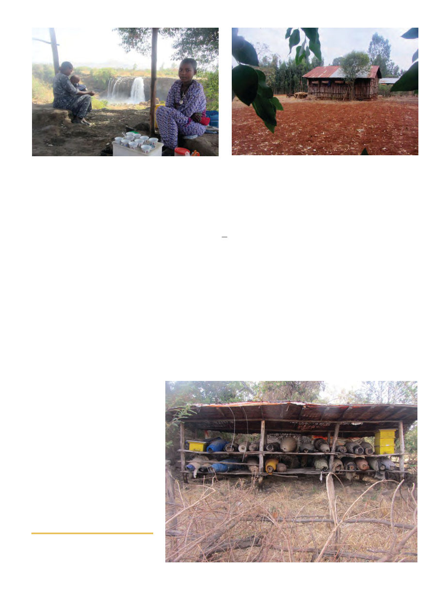

September 2012
883
being on the outside of the hive by the time
I’d inspected all the combs of a KTBH. Ad-
ditionally, the drones were almost entirely
black – at first I thought I was seeing some
other insect in the hives!
Nigeria itself is an interesting place. There
are train tracks connecting every major
town, but the trains haven’t run in ten years.
They used to have oil refineries, but they’ve
fallen into disrepair. Though Nigeria is a
major oil producer, they now have to export
their oil to refineries in Sao Tome & Principe
(owned by a former Nigerian president I’m
told) and re-import it. There’s currently a
terrorist group (Boko Haram) active in Nige-
ria, primarily in the north. Every day they
were in the paper for violence somewhere in
the country. One day they raided a prison
down the road from where fellow beekeep-
ing volunteer Doug Johnson was working
and released 112 inmates. My return to the
capital, Abuja, was delayed for a day at the
end of my 2nd assignment because Boko
Haram had threatened to bomb “hotels
Westerners frequent” and the city was
locked down. But it’s okay their only com-
plaint is “western education.” Oh wait.
Ethiopia
After my second project in Nigeria (this
time in Nasarawa State near the middle), I
flew directly to Ethiopia to begin another
Winrock project there. Prior to this I would
have imagined Ethiopia as a desolate desert
full of rocks and camels. It turns out
Ethiopia is mostly mountainous, with rolling
green slopes, frequent rain, and wood smoke
hanging low over quaint villages of huts in
mountain valleys. I believe they also have
African savannah in the Great Rift Valley
and tropical jungles in the south.
In contrast to Nigeria, Ethiopia has a very
long beekeeping tradition. Far from the fear
of bees I found in Nigeria, many farmers in
Ethiopia keep bees, and everyone seems
very comfortable living very close to bee-
hives. In fact, 79% of the traditional hives
were found to be kept inside people’s houses
in a recent survey in a village in the mid-
lands of Tigray2 (near the stove was the pre-
ferred location, to keep them warm). That
result was the highest of three study areas in
that research, but the overall average was
still 41% being kept in the house, and if not
inside the house, 94.7% of them keep the
hives in the immediate vicinity of their
house3. Clearly, Ethiopians are very com-
fortable with their bees, and I was quite im-
pressed with how advanced their traditional
beekeeping methods are.
I conducted training in three different lo-
cations in Ethiopia: Bahir Dar and Finot
Selam in the western Amhara region, and in
a little town called Korem in the mountains
of the Tigray region. I had the great pleasure
of working with two very knowledgeable in-
terpreters, Kerealem Ejigu, a graduate stu-
dent in beekeeping and an author of
“Beekeeping in Amhara Region” and Gir-
may Murutse, also a graduate student in bee-
keeping and author of “Honeybee Colonies
and Beekeeping Production Systems in
North Ethiopia.” They were both extremely
helpful and their books informed me of
many interesting facts about traditional bee-
keeping.
There seems to be some confusion about
exactly which subspecies’ are present in
Ethiopia. A 2004 study4, which both my in-
terpreters held to be accurate, identified five
subspecies in the country: A. m. jemenitica,
A. m. scutellata, A. m. bandasii, A. m. mon-
ticola & a new subspecies they called “A m.
woyi gambella.” However, a 2011 study5 I
find persuasive argues that based on mor-
phological studies, the bees of Ethiopia do
not belong to any of the above-mentioned
subspecies, but one new species proposed to
be called A. m. simenses. Furthermore, the
beekeepers themselves differentiate between
types of bees found locally, mainly by color,
but they attest that there are definite behav-
ioral differences. Kerealem in the Amhara
region identified these as “wanzie” (“nearly
yellow” in color and the bee of preference
among 61% of the 1034 beekeepers his team
surveyed), “shanko” (black), and “tinjutie”
(grey in color)6. Girmay, writing in the
2 Murutse 2012.
3 Kerealem 2008.
4 Amssalu 2004.
5 Meixner 2011.
6 Kerealem 2008.
Ethiopian shaded apiary
(l) Fresh coffee and Blue Nile Falls, can you get more Ethiopian? (r) Note the beehives strapped to the side of the house.
This attitude towards beehives is typical in Ethiopia.